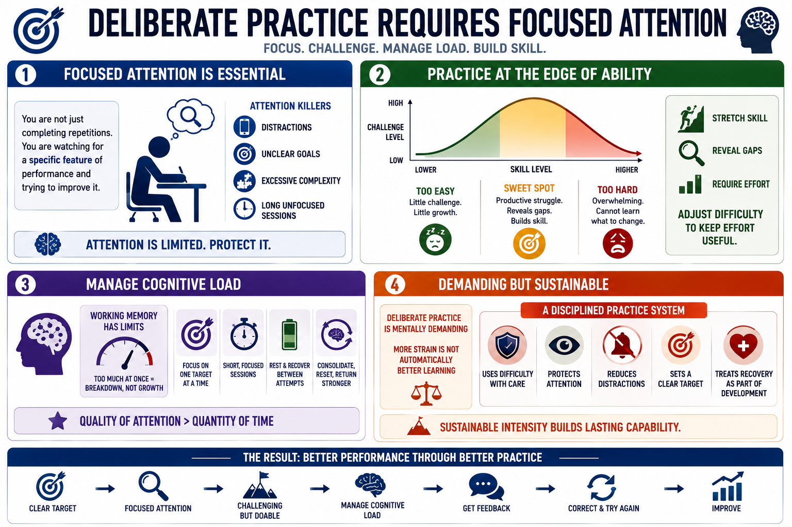

Focus, Difficulty, and Cognitive Load
Connecting to LMS... Progress: in progress

Narration
Deliberate practice requires focused attention. The learner is not just completing repetitions; they are watching for a specific feature of performance and trying to improve it. That attention is limited. Distractions, unclear goals, excessive complexity, and long unfocused sessions all make practice less effective because the learner cannot process the feedback and correction that matter.
The strongest practice often happens near the edge of current ability. The task should be challenging enough to stretch skill, reveal gaps, and require effort. It should not be so hard that the learner becomes overwhelmed and cannot tell what to change. Productive struggle creates information. Overload creates noise. Good practice design adjusts the difficulty so effort stays useful.
Cognitive load matters because working memory has limits. If a learner is trying to manage too many new elements at once, performance may break down for reasons unrelated to the target skill. Short focused sessions can be more valuable than long unfocused sessions. Rest between attempts helps learners consolidate, reset attention, and return with enough mental energy to correct the next attempt.
Deliberate practice is mentally demanding, but it should not become unsafe or unsustainable intensity. More strain is not automatically better learning. A disciplined practice system uses difficulty with care. It protects attention, reduces unnecessary distractions, sets a clear target, and treats recovery as part of performance development rather than a sign that the learner is not trying hard enough.